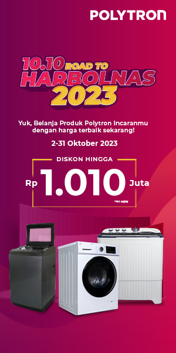
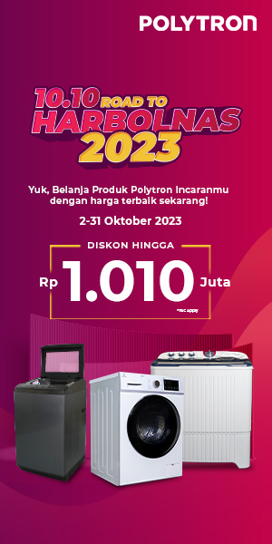

Struktur
Pendahuluan
Imperialisme berasal dari bahasa Latin 'imperare' yang berarti memerintah. Pengertian imperialisme adalah sistem politik untuk menguasai dunia bagi kepentingan negara penakluk dengan melakukan penjajahan-penjajahan sekaligus menanamkan pengaruh dalam segala aspek kehidupan di wilayah jajahannya. Senada, menurut Kamus Besar Bahasa Indonesia (KBBI) imperialisme adalah sistem politik yang bertujuan menjajah negara lain untuk mendapatkan kekuasaan dan keuntungan yang lebih besar. Sesuai definisi tersebut, maka tujuan imperialisme adalah untuk menjajah atau memerintah wilayah yang dikuasai secara tidak sah dan tak jarang mengorbankan penduduk setempat.
Jenis-Jenis Imperialisme
1. Imperialisme Kuno
Imperialisme kuno adalah imperialisme yang berlangsung pada zaman kuno sampai revolusi industri. Imperialisme ini menekankan perluasan wilayah suatu negara melalui penaklukan negara-negara lain.
2. Imperialisme Modern
Imperialisme modern adalah imperialisme yang berlangsung setelah revolusi industri pada abad ke-19 sampai akhir Perang Dunia II. Tujuan imperialisme modern adalah untuk penguasaan bahan baku industri dan perluasan wilayah pasar untuk memasarkan hasil industri. Artinya, imperialisme ini lebih karena motif ekonomi.
3. Imperialisme Ultramodern
Imperialisme ultamodern adalah imperialisme yang berlangsung setelah Perang Dunia II sampai sekarang. Imperialisme ini menekankan penguasaan mental, ideologi, dan psikologi suatu negara kepada negara lain.
Latar Belakang Imperialisme
1. Jatuhnya Konstantinopel ke Turki Utsmani
Salah satu penyebab imperialisme di Indonesia adalah jatuhnya Konstatinopel ke Turki Utsmani. Konstatinopel adalah ibu kota Romawi Timur (Byzantium). Dulu, Konstatinopel merupakan pusat perdagangan rempah-rempah Eropa di kawasan Laut Tengah. Akses ke Konstatinopel pun dulu terbuka. Namun sejak jatuh ke tangan Turki Utsmani pada 1453, akses perdagangan Konstatinopel jadi tertutup. Harga rempah-rempah pun melambung tinggi di pasar Eropa, sehingga bangsa Eropa mulai mencari sumber rempah-rempah baru yang lebih murah. Mulanya, bangsa Eropa yang mencari rempah ke Indonesia adalah Portugis dan Spanyol. Kemudian, datang pula Belanda dan Inggris. Semuanya yang semula hanya ingin mendapatkan rempah-rempah berubah menjadi ingin menguasai Nusantara dengan menerapkan imperialisme. Dari sini dapat disimpulkan, contoh negara imperialisme atau yang menerapkan sistem politik ini adalah Portugis, Spanyol, Belanda, dan Inggris di Indonesia.
2. Gold, Glory, dan Gospel
Selain ingin mencari rempah-rempah, para bangsa Eropa juga ingin mencapai tujuan Gold atau harta, Glory atau kekuasaan, dan Gospel atau penyebaran agama di Indonesia. Makanya, mereka berusaha menguasai Tanah Air pada era penjajahan.
3. Perkembangan Ilmu Pengetahuan di Eropa
Ilmu pengetahuan dan teknologi (Iptek) tengah berkembang di Eropa ketika masa penjajahan. Maka dari itu, mereka sudah mengenal sistem kompas, pe.ayaran, hingga konstruksi kapal yang dapat digunakan untuk berjelajah jauh sampai ke Nusantara. Begitu juga dengan sistem persenjataan yang mendukung keberhasilan untuk perang dan menguasai suatu wilayah, semuanya juga telah berkembang di Eropa.
4. Pengaruh Tulisan Marco Polo
Marco Polo adalah pedagang asal Venesia, Italia yang telah menjelajahi bumi, termasuk kekayaan rempah-rempah di bumi bagian timur. Kisah perjalanannya tertuang dalam buku dan beredar di Eropa.
5. Semangat Menaklukkan Kembali
Semangat menaklukkan kembali atau reconquista hegemoni Kristen Eropa atas kekuasaan Islam yang pernah menguasai Semenanjung Iberia sekitar Spanyol dan Portugis juga berkembang pada era sebelum penjajahan. Hal ini turut mendasari terjadinya imperialisme, khususnya di daerah Asia yang memiliki banyak Kerajaan Islam.
Sumber : cnnindonesia.com

 
